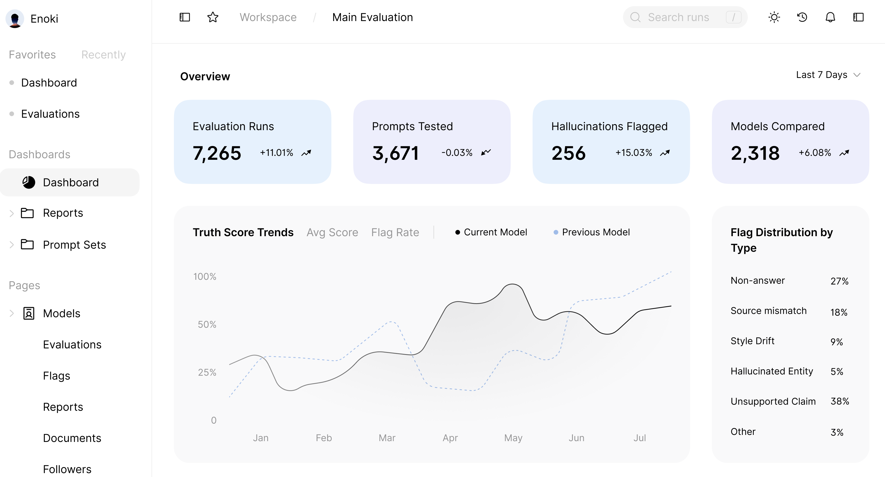
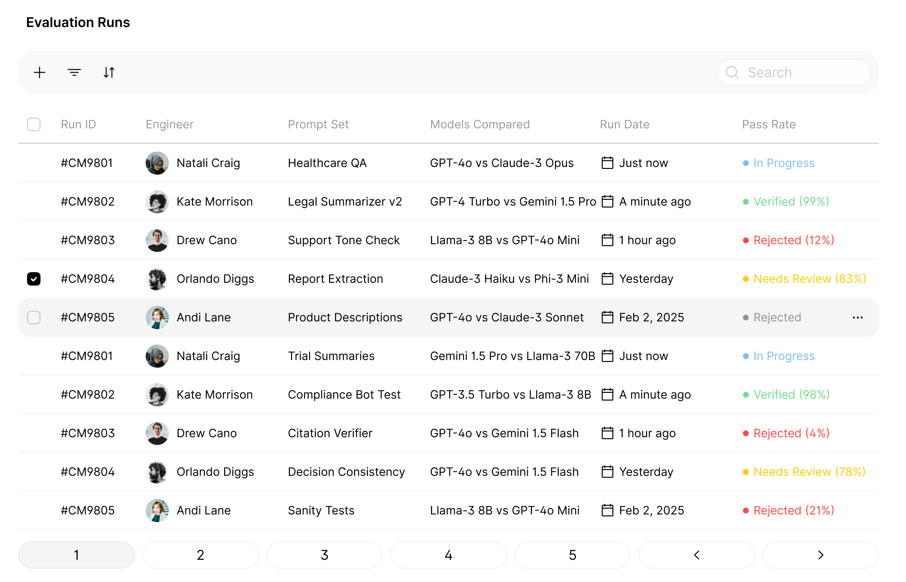

LLM Truth Studio by Enoki verifies factual accuracy across models and prompts — helping teams catch hallucinations, ensure compliance, and ship trustworthy AI faster.
🔍 Get Early AccessLLMs are powerful — but dangerously confident.
A single model update or prompt tweak can make them fill in the blanks — confidently inventing facts that aren’t real.
Teams waste hours manually reviewing outputs, yet can’t answer the one question that matters:
Meanwhile, compliance teams and clients demand proof that outputs are reliable — not just impressive.
Upload your prompts or test cases once. Truth Studio replays them automatically across model versions — giving you reproducible, parameter-controlled comparisons.
The evaluator identifies hallucinations, unsupported claims, and behavioral drift using rule-based checks and LLM-as-judge scoring — no manual review required.
Each run produces a Truth Score measuring factual accuracy and consistency. Track trends, compare models, and share reports with your compliance team.
From evaluation trends to flag analytics, Enoki gives you visibility into every model decision.
 Stop guessing. Start verifying. Join our early access and help define the future of AI reliability.
🔍 Verify My Model — Early AccessBuilt for AI teams working in regulated, high-stakes environments — where truth matters as much as innovation.